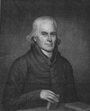

1709 yılında İngiltere’deki Epworth’ta bir Anglikan vaizinin evi yandı. Bir mucize eseri olarak vaizin altı yaşındaki oğlu John Wesley (1703-1791) alevlerden sağ kurtulmayı başardı. Wesley bu olayı asla unutmayacaktı.
Wesley, Metodist kilisesini kurduktan çok sonra kendisinin o yangından Tanrı’ya hizmet etmek için kurtarıldığını söyleyecekti.

Wesley, Doğu İngiltere’de yaşayan dindar bir ailenin çocuğu olarak dünyaya geldi. Babası Samuel Wesley (1662–1735) kırk yol boyunca Epworth’ta başpapazlık yapmıştı. Aynı zamanda önemli bir şairdi. Annesi Susanna Wesley (1669–1742), On Emir ve diğer dini konularda yazılar yazmıştı. John Wesley, 1720 yılında Oxford Üniversitesi’ne girdi. Kardeşi Charles ile birlikte dindar öğrencilerden oluşan “kutsal” bir klübe üye oldular. Kampüs civarında onlara Metodist deniliyordu. 1728 yılında rahip oldu. 1735 yılında Oxford’dan ayrıldı ve Georgia’daki Savannah şehrine gitti. Yerli Amerikalıları Hıristiyan yapmayı umuyordu.
Wesley’in Georgia seyahati hem mesleki hem de kişisel açıdan bir felakete dönüştü. Yerliler onun vaazları ile ilgilenmiyordu. Üstelik Georgialı bir kadına aşık olmuştu. Ancak kadın onu reddedip bir başkası ile evlendi. En sonunda kadının eşi onu iftiracılıkla suçlayınca İngiltere’ye dönmek zorunda kaldı.
1738 yılında İngiltere’ye döndü. Morali bozuktu. 24 Mayıs 1738 tarihinde Londra’daki Moravian Kilisesi’nde bir vaaz dinledi. Daha sonra dinlediği bu vaazla ilgili şöyle yazacaktı: “Yüreğime garip bir sıcaklık doldu.” Duyduğu vaaz inancını canlandırmıştı. At sırtında İngiltere’yi gezerek vaazlar verdi. Çiftliklerde, evlerde ve hatta mezarlıklarda bile konuşuyordu. 1739 yılında taraftarlarını İngiltere Metodist Topluluğu bünyesinde bir araya getirdi.
Metodist Kilisesi’nin, resmi İngiltere Kilisesi’nden temel farkı Wesley’in vaazlarındaki tonda gizliydi. Ateşli, uyanışçı bir vaizdi. Duygulu, iyimser bir dille konuşarak kurtuluşun mümkün olduğundan bahsediyordu. Ayrıca Anglikan piskoposlarını kabul etmek yerine kendi vaizlerini atadı. Bu şekilde Metodistler, fiilen Anglikan kilisesinden ayrılmış oluyordu.
Öldüğünde seksen sekiz yaşındaydı. Binlerce takipçisi olmuştu. Günümüzde ABD’de 10 milyon civarında Metodist bulunmaktadır.
Ek Bilgiler
1- Charles Wesley çok başarılı bir ilahi okuyucusuydu. Altı bin Metodist ilahisi yazdığı söylenmektedir. Bu durum Metodistlerin “şarkı söyleyen insanlar” olarak tanınmasını sağlamıştır.
2- Wesley defalarca aşık oldu, buna karşılık 1751’e kadar evlenmedi. Karısı, Londra’lı bir tüccarın dul eşi olan Mary Vazeille idi. Wesley çok fazla dolaştığı için evlilikleri iyi gitmedi. Mary en sonunda onu terk etti.
3- Wesley’in son sözleri çok ünlüdür: “Her şeyin en güzeli Tanrı’nın bizimle olmasıdır.”